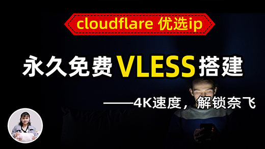
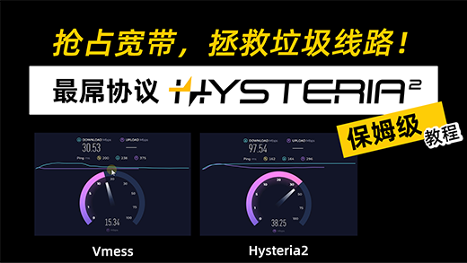
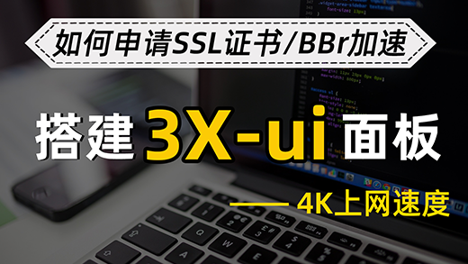

科技小露
机场评测
TikTok
搭建
网站
软件
YouTube
一键搭建X-UI面板，安全稳定的专属节点搭建方法，VLESS+Vision+Reality 协议，4K速度科学上网

【永久免费】通过Cloudflare Worker部署免费的VLESS节点，优选ip，解锁Netflix、ChatGPT
Cloudflare 永久免费节点搭建方法，50+免费节点，自动优选IP ，快速创建订阅链接，域名托管CF方法

最屌协议 Hysteria2 节点搭建VPS，抢占宽带，拯救垃圾线路！大幅提升稳定性！第二代歇斯底里
X-ui 面板搭建教程：VPS 搭建 Tiktok 独享的原生节点，tiktok专用直播节点VPN

X-ui 面板搭建教程：VPS 搭建 Tiktok 独享的原生节点，tiktok专用直播节点VPN